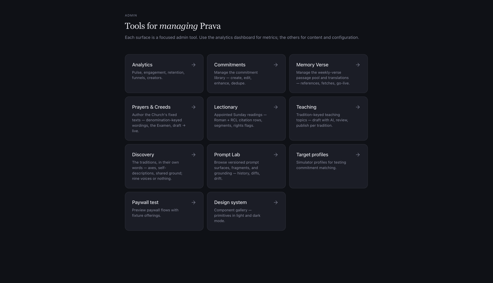
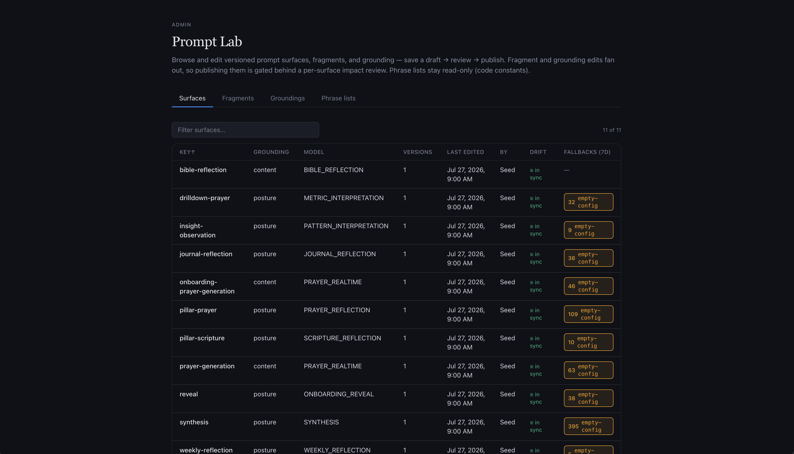
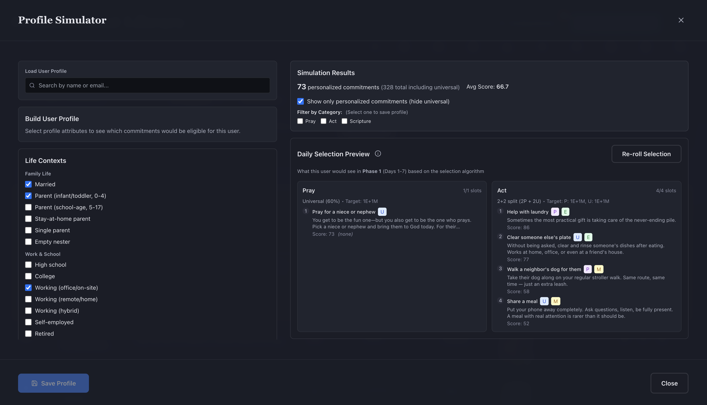

Prava
An iOS prayer and scripture app, designed, built, and shipped alone, from first commit to the App Store.
- Role
- Sole engineer and designer
- Stack
- TypeScript · Next.js · Capacitor · Postgres with Prisma · Anthropic API
- Verify
- App Store · joinprava.com


The problem
Faith apps borrow the wrong mechanics.
Most of them are habit trackers in vestments: streaks, scores, completion rings, and the quiet guilt of a missed day. Those mechanics reward showing up and punish honesty. The moment a practice becomes a scoreboard, people perform for the app instead of telling it the truth.
What I wanted already existed and was two thousand years old: the Church's week, its lectionary, its prayers, its creeds. Prava puts that at the center across twelve traditions, in each tradition's own words.
The founding rule is record, not score. It reads like product copy. It turned out to be an engineering constraint that shaped the schema, the prompts, and what the app refuses to measure.
What was built
A full consumer product, run by one person.
A native-feeling iOS app with a daily journal, prayer and scripture surfaces, a weekly lectionary, and small accountability circles. The AI teaches and reflects. It never touches the Church's fixed texts: creeds and historic prayers render exactly as written, enforced by CI scanners rather than good intentions.
- Platform
- Next.js and TypeScript inside Capacitor / WKWebView as a native iOS app
- AI
- Thirteen grounded surfaces, each reading versioned system prompts with snapshot-tested fallbacks
- Data
- Postgres with Prisma, additive-only migrations
- Revenue
- Freemium subscriptions, monthly and annual
- Infra
- Object storage, error monitoring, product analytics with feature flags
Three decisions
Decisions I would defend in any interview.
AI cost in three waves
Waste first: redundant calls and oversized context. Then small-model routing for five surfaces where quality held. Then prompt caching, with a usage-event table in Postgres that checks the cache metrics the provider reports. A cost optimization you cannot measure independently is a rumor.
Philosophy as a schema constraint
The database stores what happened, never a grade. Unlimited grace is automatic, so a missed day is recorded honestly and never becomes a punishment mechanic. Deciding what the database refuses to know was the most interesting design problem in the product.
The process is the second engineer
Additive-only migrations so nothing is ever un-shippable. Snapshot-tested prompt fallbacks so an AI regression fails a test instead of a user. Features dark-shipped behind flags with written flip runbooks, so turning something on is a decision, not an event.
The back office
Eleven internal tools nobody sees.
The Prompt Lab versions every system prompt behind the thirteen AI surfaces and shows history, diffs, and drift between the database and the in-code fallback. The Profile Simulator builds a user from life contexts and runs the selection algorithm, scores included, so tuning the matcher takes an afternoon instead of a release cycle.



Outcome
Live, used across a dozen denominations, paying for itself.
On the App Store since Easter 2026, with paying subscribers on monthly and annual plans. The specific numbers stay off the internet on purpose and are available in an interview.